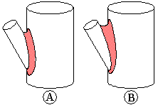
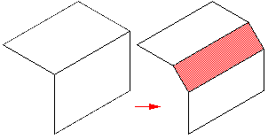
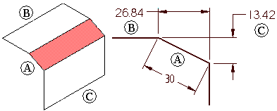
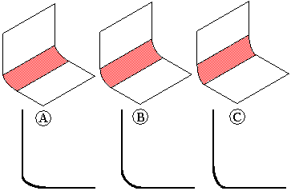
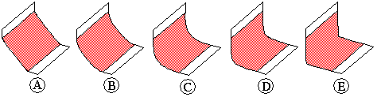

Defining the blend shape
Modeling ordered features:
When you set the Blend or Surface Blend options on the Round Options dialog box, you can use the Shape option on the Blend command bar to specify the blend shapes shown below.
Modeling synchronous features:
When you set the Blend or Surface Blend options on the Blend Type Step of the Blend command bar, you can use the Shape option on the Select Step of the Blend command bar to specify the blend shapes shown below.
Blend shapes
-
Constant Width
-
Chamfer
-
Bevel
-
Conic
These options give you the flexibility you need for a wide variety of design situations. For example, you can use the Chamfer command to create a chamfer on a solid body, but not on a surface body. To create a chamfer on a surface body, you must use the blending options within the Round command.
The Tangent continuous option constructs a blend with a uniform radius. This option works in a similar fashion to rounding.
The Constant Width option constructs a blend between two sets of surfaces where the chord width of the blend is a constant width (A). This option is useful when a surface intersects another surface at an angle where a constant radius blend (B) might add too much or too little material.

The Chamfer option constructs a planar blend with an equal setback chamfer. You can use the Setback option to define the chamfer size.

The Bevel option constructs a blend with a linear cross section that is determined by the bevel length and ratio you specify. The value you enter in the Setback box determines the length of the new blend face (A). The value you enter in the Value box determines what amount of material to remove from the two adjacent faces (B), (C).
For example, if you specify a Setback of 30 mm and a Value entry of 0.50, a new blend face that is 30 mm in length is constructed. The Value entry of 0.50 specifies that to position the new blend face (A), twice as much material is removed from the first face you select (B), than the second face you select (C). In the case of two planar faces, which are also perpendicular to each other, 26.84 mm is removed from face (B) and 13.42 mm is removed from face (C). You can type a value that is greater than zero, but less than or equal to 10.0. A Value entry of 1.0 creates a 45 degree bevel.

The Conic option constructs a constant elliptical cross section blend. When you set this option, the Radius value defines the width of the cross section and the Value entry you type changes the cross section shape. You can type a Value entry that is greater than but not equal to zero. As the Value entry approaches 0.0, the cross section becomes flatter and more closely resembles a chamfer (A). As the Value entry increases, the cross section becomes more rounded (B) and then becomes flatter again (C).

You can use the Curvature continuous blend option to control the continuity, or softness, of the blend surface. A Value entry less than 1.0 creates a flatter, more chamfer-like cross-section (A) and (B). A Value entry greater than 1.0 appears to extend the selected surfaces and creates a smaller blend radius (C), (D), and (E). Typical values can range from 0.0 to 10.0.

How do I
Round part edgesEdit a synchronous round
Control the edit behavior of a synchronous round
Reorder rounded part edges
Blend part faces
Blend surface bodies
Construct a variable radius round
Learn more
Rounding and blendingEditing rounds
Rounding order
Rounding overflow options
How does blending work?
Blends on surface bodies
Tangent hold lines
Variable radius rounds
Look up more details
Round commandRound command bar (ordered)
Round command bar (synchronous)
Round Options dialog box
Round Parameters dialog box
Reorder Round command
Blend command
Blend command bar
Surface Blend Parameters dialog box